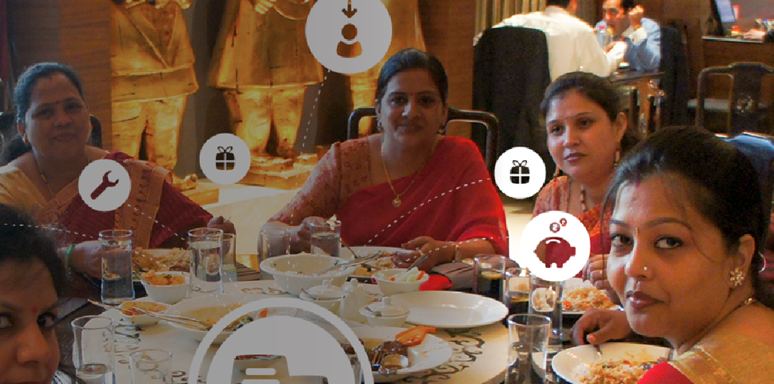
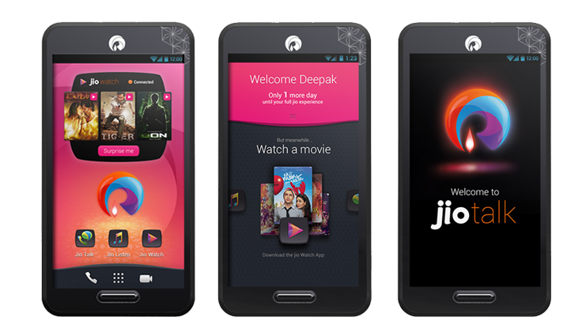
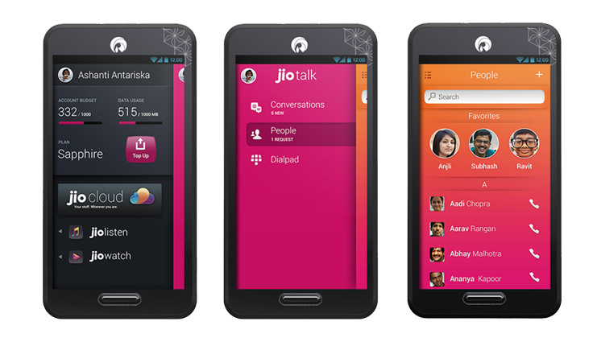
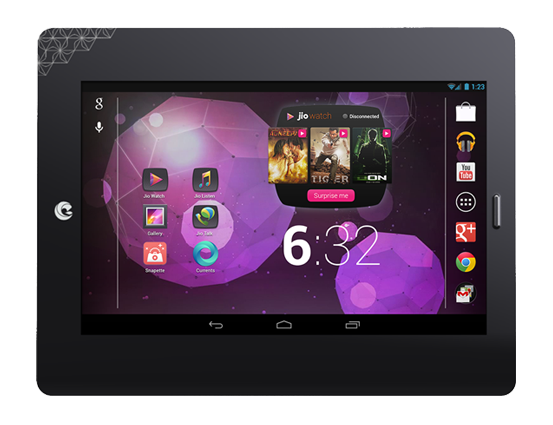
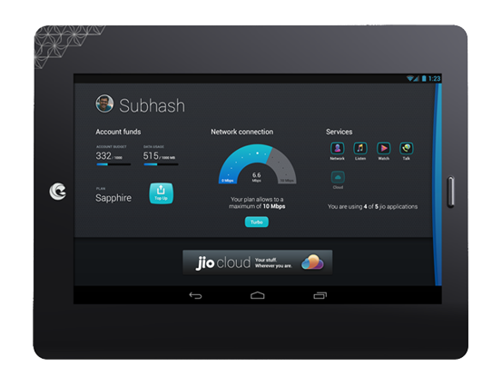
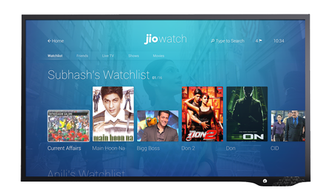
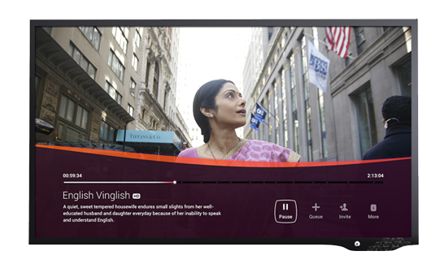
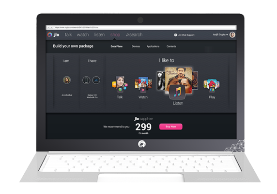
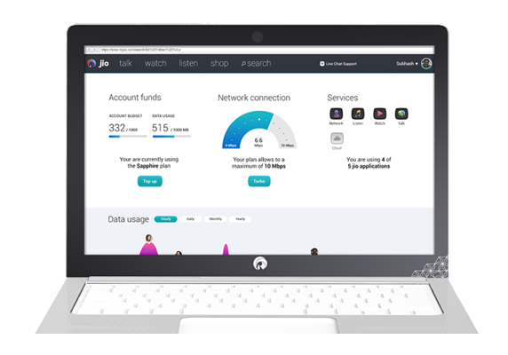

photo above was taken during on-site design research in mumbai, india.objectives
to design and build india’s first 4g network from the ground up.
a 3-year engagement that involves frog’s industrial design and experience strategy team to build and design the end-to-end 4G services and product experience tailored for the indian market.
internal team structure -- due to the large scale of the engagement frog setup smaller track for different discipline to run the project in parallel:
- design research -- in mumbai and delhi
- industrial design -- product design includes: 4G tower/mast, setup box, router, mifi, usb dongle, etc.
- experience strategy -- product & service design, and connectivity
- connectivity track covers onboarding and first-use experience incl. sign-up on multiple touch point, account management, top-up, referrals, and self-help
role + responsibilities product lead for the connectivity track (with close collaboration with the experience strategy team) to define the lifecycle experience for the product and services from onboarding experience to first-use, account management and advocacy.
- led a 15+ people team of project manager, interactive designers, visual designers, engineers, and design technologists
- led and facilitate client workshop and ideation sessions, as well as liaison across frog internal team (between amsterdam and munich studio)
deliverables snapsots below are some broad samples of the project deliverables from the experience strategy track. ping me if you keen to learn more. i'd be happy to give more detailed walkthrough.
- mobile


- tablet


- tv


- laptop


process agile/scrumm-led project management environment with daily stand-up across studios divided into lead stand-ups (munich-amsterdam), and internal stand-up within each studio and track.
tools adobe creative suites (inDesign, illustrator, photoshop), ms suites, confluence and wiki-page for internal and client collaboration, and jira for project management.
. . . . .
#frogDesign #germany #ExperienceStrategy, #ProductManagement, #UserInsights, #UX, #ProductDesign, #Technology, #Engineering
. . . . .